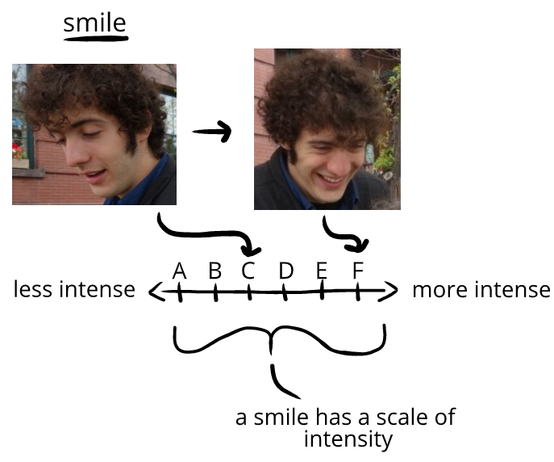

When we look at a sequence of photos, we can see how humor tells decrease or increase in intensity over time:
This change in intensity of humor happens through a change in the intensity of their humor tells:
Lifecycle. To think about the intensity of a humor tell like a smile, we can think about the “life cycle” of a smile. We start with the lowest intensity version of a smile, and notice how it progresses into greater intensity:
- twinge of muscles in the cheeks, followed by a
- twinge of muscles around the eyes, followed by a
- twinge of muscles around the lips, followed by
- greater contraction around our eyes, followed by the
- edge of our lips pulling outward, followed by our
- lips being stretched by our cheeks muscles
(and so on)

We can do this with any humor tell. The lowest-intensity of social seeking might be tilting our head to look at someone, or even just thinking about talking to them. The highest-intensity might be running to find someone, and barging into their conversation to excitedly tell them something.